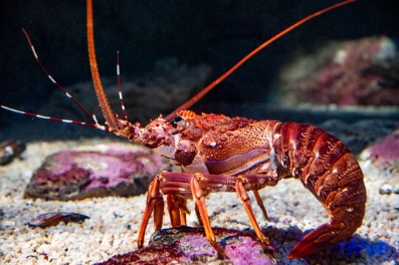

Rock Lobster (Crayfish)
Panulirus homarusRock lobster populations along the KZN coast have declined dramatically over recent decades due to sustained overexploitation through recreational and commercial harvesting. Illegal night-diving outside permitted seasons continues to put severe pressure on remaining stocks. SASSi rates east coast rock lobster as red — stocks have not recovered sufficiently to support current harvest levels.
Full Species Profile